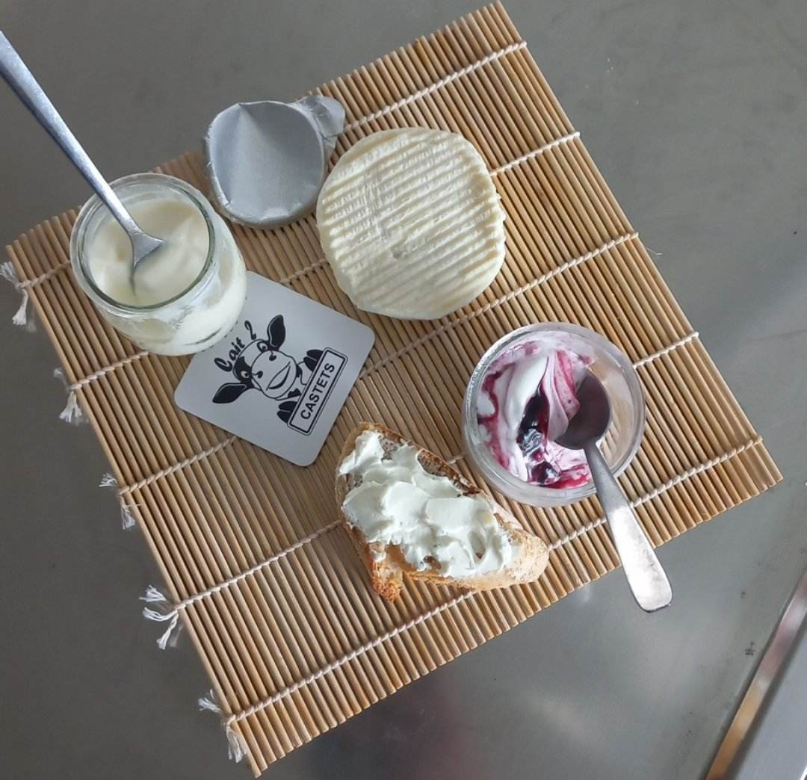
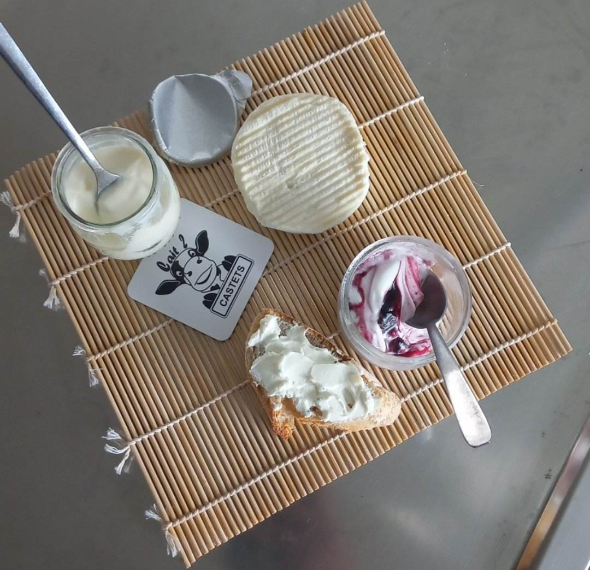

05 55 55 55 55
lait2castets
05 55 55 55 55
lait2castets
Bienvenue sur le site de la ferme Lait2Castets
Ici vous pouvez découvrir la ferme, nos
produits et même postuler pour nous
rejoindre
Dans notre ferme nous produisons plus
particulièrement des produits laitiers comme
ceux dans cette image
Nos vaches sont nourries et traitées de la façon la
plus naturelle possible pour que leur lait soit le
plus frais
Avec ce lait nous pouvons vous proposer des
produits fermiers aussi riche en qualité, que en goût
Des fromages, des yaourts, des glaces et d'autres
succulents produits sont en vente soit sur ce sir,
soit en nous rencontrant directement à notre
magasin mobile pendant les marchés des
producteurs ou autres évènements fermiers.
 
